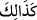
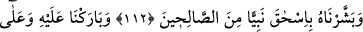
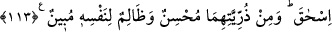

kurban adayan câhilliye döneminden biriyse onun kurbanı zâten mûteber değildir. Şâyet
İslâm’a mensup bir kimse ise kurbanın bir peygamberin huzurunda icra edilmesi gerekir.
Zira o peygamber kurbanın kabulü için dua edecek duanın ve kurbanın kabulü olarak
gökten ateş gelip kurbanı yakıp yiyecektir. Bazı hakikat erbabı, kurbanlığın İshak (a.s.)
olduğunu söylemişlerdir.
İncelendiği zaman bu iki rivâyetin şöyle bağdaştığı görülür: Kurban edilmenin sûret-i
zâhirde önce İsmail (a.s.)’ın hakikatinde câri olmuş, sonra İshak (a.s.)’ın hakikatine
sirâyet etmiştir. Zira koçun sûretinde zâhir olan boyun eğme işi Allah’a ısmarlayıp
tevekkül etme ve teslimiyet gibi İbrahimî miras makamı İsmail (a.s.) gibi aynı şekilde
İshak (a.s.)’da da gerçekleşmiştir. Bundan dolayı İsmail ve İshak (a.s.) ilâhi müjdede
ortaktırlar. Zira Allah Teâlâ şöyle buyurmuştur: “Biz de ona uysal bir oğul
müjdeledik... Biz onu salihlerden bir peygamber olarak İshak ile de müjdeledik.”
(es-Saffat 101-112)
Buna göre İsmail (a.s.) ve İshak (a.s.) sûret, şahıs ve kimlik olarak farklı, ancak mânâ
ve hakikat olarak birdirler. Artık sen dilersen kurbanlık İsmail (a.s.)’dır; dilersen İshak
(a.s.)’dır diyebilirsin. Hakikatte her iki görüş de doğrudur. Çünkü İbrahim (a.s.)’ın
sırrını, yani onun sahib olduğu hilafet, dostluk (hullet), muhabbet ve teslimiyet gibi
makamları temsil etmekte İsmail ile İshak’dan her biri diğerinin aynıdır; bu özelliklerde
eşittirler. Allah’ın selâmı kıyamete kadar İbrahim, İsmail ve İshak’ın üzerine olsun!
“Geriden gelecekler” ümmet ve milletler “arasında ona” İbrahim’e “(iyi bir nam)
bıraktık: İbrahim’e selâm! dedik. Biz iyileri böyle mükâfatlandırırız.”
Burada “__WORD__ ifadesindeki “__WORD__ (kâf), kendisinden önce geçene değil; kendisinden
sonraki hükme bağlıdır. İsm-i işaret, ümmetler ve milletler arasında İbrahim (a.s.)’ın
güzel yâd edilmesinin devamlılığına delâlet eder. Buna göre sözde tekrar yoktur. Yani
İbrahim (a.s.) muhsinlerdendir. Bizim kendisine yaptığımız bunca iyilik, onun ihsan ve
iyiliğine karşılıktır.
Bu söz, bu şekliyle Nuh (a.s.) kıssasında da geçmiştir. “Çünkü o, bizim” imanda ikan
ve itminan üzere derinleşen “mü’min kullarımızdandır.”
et-Te’vîlâtü’n-Necmiyye’de der ki: O bizim ihlasa erdirilmiş (muhlas)
kullarımızdandır. Dünya, hevâ ve sivâ ehli kullardan değildir.
112, 113. Salihlerden bir peygamber olarak ona (İbrahim’e) İshak’ı müjdeledik.
Kendisini ve İshak’ı mübarek (kutlu ve bereketli) eyledik. Lâkin her ikisinin
neslinden iyi kimseler olacağı gibi, kendine açıktan açığa kötülük edenler de